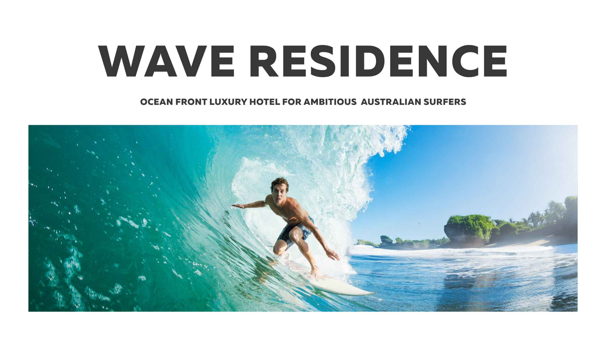

AMAZON · SCK8
Learning Ambassador / POC / PIT OperatorTraining, coaching, safety, process improvement and operational execution.
CREATIVE DIRECTION / BRAND STRATEGY / MARKETING
20+ years connecting strategy, ideas and execution across brand systems, campaigns, digital experiences, packaging, publications and production.
Different categories demand different visual languages. The portfolio follows the same principle—each chapter gets room to behave like the work itself.
Turning complex financial technology propositions into a coherent digital campaign system across products, thought leadership and events.


Retail-specific campaign executions for Avery Dennison—translating RFID, traceability and inventory propositions into concise account-level communications.


Long-form communication demands rhythm: hierarchy, pacing, imagery and enough restraint to let the content breathe.



 7 COLOURED EARTH / RHUM LABELS
7 COLOURED EARTH / RHUM LABELS KOTÉ VINS & SPIRITS
KOTÉ VINS & SPIRITS ZILI COFFEE
ZILI COFFEE BANQUE DES MASCAREIGNES
BANQUE DES MASCAREIGNESPACKAGING · IDENTITY APPLICATION · PREPRESS · ENVIRONMENTAL / VEHICLE GRAPHICS
Industrial and agricultural propositions need credibility without sacrificing immediacy. Clear hierarchy turns technical information into communication.


A brand is not a logo.
A campaign is not an ad.
A portfolio is not a wall of thumbnails.
Training, coaching, safety, process improvement and operational execution.
Frontline leadership across customer service, checkout and money-services workflows.
B2B campaign systems, SaaS/MarTech creative, transportation branding and integrated communications.
Advertising, multimedia, packaging, retail marketing, communications and production.
Creative Direction
Art Direction
Brand Systems
Campaign Development
B2B + B2C
Integrated Marketing
Digital + Social
Retail + Experiential
Adobe Creative Suite
Figma · Canva
HTML5
Production + Prepress
Teams + Coaching
Stakeholders
Projects
Process Improvement